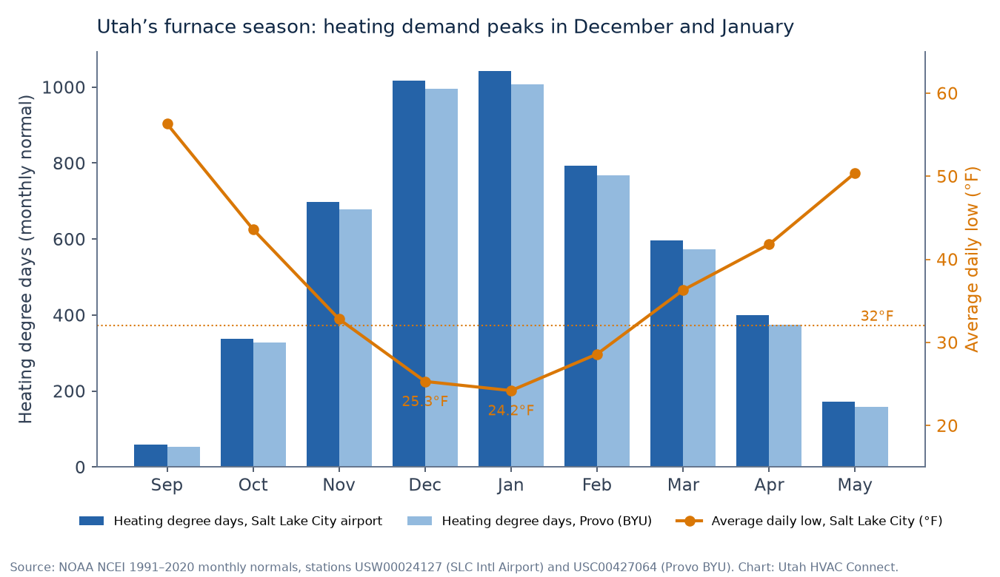

TL;DR
- Most common cause, per Carrier: the thermostat fan is set to “On” instead of “Auto,” so the blower circulates room air between heating cycles (Carrier). Switch it to Auto.
- A short burst of cool air at startup can be normal. Some furnaces hold the blower about 30–60 seconds while the heat exchanger warms up.
- If the cold air continues, the usual suspects are a dirty filter tripping the high-limit switch, a dirty flame sensor, ignition or gas-valve problems, a control board, and, on high-efficiency furnaces, a plugged or frozen condensate drain.
- Utah context: Salt Lake City’s average January low is 24.2°F, and December and January each top 1,000 heating degree days (NOAA 1991–2020). Furnaces run far more in those months, so check the filter early in the season.
- Smell gas or hear a CO alarm? Leave first, then call 911 or Enbridge Gas at 1-800-767-1689 from outside.
When the furnace runs but the vents blow cold air, the cause is often simple, and sometimes it isn’t a fault at all (Carrier). This guide goes deeper than the quick checklist on our no-heat furnace repair page: it walks through each cause furnace makers list, which checks are safe for you, and which belong to a licensed technician.
Utah HVAC Connect is a matchmaker. We connect homeowners with licensed Utah HVAC contractors. We’re not a contractor, we don’t send technicians, and we don’t quote repairs.
The quick answer
Carrier says the most common cause of a furnace blowing cold air is a thermostat fan setting of “On” instead of “Auto.” With the fan on, the blower runs all the time and pushes room-temperature air between heating cycles (Carrier). Switch the fan to Auto. If the air still isn’t warm, work down the list below.
Safety first: if you smell gas or a carbon monoxide alarm sounds, leave the home, then call 911 or Enbridge Gas at 1-800-767-1689 from outside. Don’t troubleshoot.
Checks that are safe for homeowners
- Thermostat mode, fan, and setpoint. Mode on Heat (not Cool), fan on Auto, and the setpoint a few degrees above the room temperature. On a programmable thermostat, check that the schedule didn’t shift after a power outage or a daylight-saving change (Carrier).
- Give it a minute. Some furnaces hold the blower for about 30–60 seconds after the burners light so the heat exchanger can warm up, so a short burst of cool air at startup can be normal (Carrier).
- The air filter. A clogged filter can overheat the furnace, and a safety switch then shuts the burners off while the fan keeps running. That’s the classic “cold air” symptom. Carrier suggests replacing basic 1-inch filters every 1–3 months, depending on the filter and the household (Carrier).
- Vents and returns. Open closed supply registers and move furniture or rugs off return grilles. Closing too many vents can make the furnace overheat too.
- Other gas appliances. If the gas range or water heater also isn’t working, contact Enbridge Gas about the supply.
- Power. Check that the furnace power switch is on and the breaker hasn’t tripped (Carrier). If a breaker trips again after a reset, stop and call a shop.
That’s where homeowner checks end. Carrier says not to attempt repairs on gas, electrical, combustion, or internal furnace parts unless you’re qualified (Carrier).
Nine causes, and who handles each
| What you notice | Likely cause listed by manufacturers | Safe homeowner step | Licensed shop |
|---|---|---|---|
| Cool air between heating cycles; the fan never stops | Thermostat fan set to “On” instead of “Auto” | Set the fan to Auto | Only if Auto doesn’t change anything |
| Cool air for the first minute after the furnace starts | Normal blower delay while the heat exchanger warms (roughly 30–60 seconds, per Carrier) | Wait a few minutes; check your manual | If cold air lasts past startup |
| Burners shut off but the blower keeps running; weak airflow | Dirty filter or blocked vents overheating the furnace, so the high-limit switch shuts the burners off | Replace the filter; open supply vents; clear return grilles | If a new filter doesn’t fix it (blower, coil, or duct problems) |
| Burners light, then go out within seconds; fan keeps blowing | Dirty flame sensor, which can’t confirm the flame | None. It’s part of the ignition system | Yes |
| Older furnace with a standing pilot; no flame | Pilot out, or a pilot that won’t stay lit | Relight only if your owner’s manual says how | If it won’t stay lit |
| Struggles to light or no heat at all | Gas supply problem or a faulty gas valve | Check whether other gas appliances work | Yes, for the gas valve and burners |
| Erratic startups; a blinking light on the control board | Failing control board | Count the blink pattern (open the cabinet only if your manual allows it) | Yes |
| Lukewarm air at the vents and rising bills | Leaky ductwork | Seal visible leaks at accessible joints with foil tape or mastic | For ducts inside walls |
| High-efficiency furnace stops on a cold night; pressure-switch code | Plugged or frozen condensate drain | Look for ice on any drain line in a garage, attic, or outside; tell the shop | Yes (drain, trap, freeze protection) |
Rows 1–8: Carrier, furnace blowing cold air and Carrier troubleshooting guide. Row 9: ICP condensing-furnace troubleshooting guide (status code 3 lists “plugged condensate drain”) and DOE Building America Solution Center. This table is a guide to what to tell a shop, not a diagnosis.
Where the limit switch and heat exchanger fit in
Furnaces have temperature safety controls called limit switches. If restricted airflow lets the heat exchanger overheat, the high-limit switch shuts the burners down and the blower keeps running to cool the equipment (Carrier). That’s why a dirty filter so often shows up as “cold air” rather than “no air.” If a technician says the heat exchanger itself is cracked, that’s a different conversation. Carrier lists it among the major repairs where repair-versus-replace comes up (Carrier), and DOE’s Building America Solution Center notes that a cracked heat exchanger often means the furnace should be replaced (BASC). Ask the shop to show you what they found. Our furnace replacement guide lists the questions to ask.
Flame sensor and ignition
Modern furnaces use a flame sensor to confirm the burners are lit. If the sensor is dirty and can’t detect the flame, the furnace shuts the burners off as a precaution, and the blower may keep running (Carrier). A manufacturer’s troubleshooting guide for condensing furnaces lists oxide buildup on the flame sensor among the causes of an ignition-proving failure (ICP). Because this is part of the ignition system, it’s a job for a technician.
High-efficiency furnaces: the frozen-drain problem
Condensing (roughly 90%+ AFUE) furnaces have a second heat exchanger that pulls extra heat from the exhaust. That produces water, so they need a condensate drain line (and a pump if there’s no floor drain nearby), and they usually vent through PVC pipe instead of a metal flue (NREL ResStock documentation for DOE). PVC (plastic) vent piping leaving the furnace, instead of a metal flue, is a common sign you have one.
- Why it matters in Utah: DOE’s Building America Solution Center warns that condensate may freeze if it’s drained outdoors in cold climates, and that furnaces where freezing can occur, such as in vented attics, may need freeze protection on the condensate drain (BASC). Bosch’s installation manual for a 97% AFUE furnace likewise says not to route the drain line outside where it may freeze, and recommends foam insulation (and, where needed, heat tracing) when the drain is exposed to temperatures near or below freezing (Bosch BGH97 manual).
- What it looks like: the furnace’s safety controls stop it from running. On one condensing furnace line, a low-pressure-switch fault (status code 3) lists a “plugged condensate drain” and “water in vent piping” among the things to check (ICP). Depending on when the fault happens, the blower can run through its off-delay with no heat, which feels like cold air.
- What to do: don’t bypass anything. Note the blink code, check whether a drain line in a garage, attic, or outside wall is iced over, and tell the shop. Fixing the drain route or adding freeze protection is installer work.
Why it shows up on the first cold nights

Salt Lake City International Airport averages a daily low of 25.3°F in December and 24.2°F in January, and Provo’s January average low is 23.8°F (NOAA 1991–2020 normals). Heating demand jumps from about 337 heating degree days in October to more than 1,000 in both December and January (NOAA). Those are averages, so individual cold snaps go lower.
More heating demand means more runtime, and that’s when weak spots surface. Carrier ties filter replacement timing to how much the system runs, and says ignitors wear out from frequent cycling (Carrier cold-air guide; Carrier troubleshooting guide). On a high-efficiency furnace, a drain line routed outdoors or through a cold space is exposed to freezing whenever nights fall below 32°F (BASC). If the problem started with the first hard freeze, mention that to the shop.
What to tell the shop
- When the air is cold: right at startup, after a few minutes of warm air, or the whole time
- What the burners do: never light, light then go out, or stay lit while the air is still cool (only if you can see this without opening panels)
- The thermostat mode and fan setting, and when you last changed the filter
- Whether it’s a high-efficiency furnace (PVC pipes) and whether you see ice on a drain line
- Any blinking light pattern on the furnace (count the flashes)
- The furnace’s approximate age
Not sure what it is? Pick “I’m not sure” on the form. That’s what it’s for.
If it keeps coming back
One cold-air episode is usually a repair. Repeated limit trips, ignition problems, or a heat exchanger concern on an older furnace can turn into a repair-or-replace conversation. ENERGY STAR suggests considering replacement once a furnace is more than 15 years old (ENERGY STAR). Age alone doesn’t decide it, though. For homes built in the 1990s and early 2000s, see our repair-or-replace guide for original furnaces in American Fork; for rebates and permits, see furnace replacement in Utah.
How matching works
- Tell us what you need on the free Get Help form: service type (Repair, or “I’m not sure”), urgency (Today, This week, or Planning), your ZIP, and when it’s reasonable to reach you.
- We match licensed Utah shops that serve your ZIP. We don’t dispatch technicians, diagnose, or write proposals.
- Matched pros may reach out using the contact details you provide. You talk with them, compare, and hire who you want, or no one. No homeowner fee and no obligation. More: how it works and how we make money.
Related guides
- Furnace not working? No-heat help in Utah: safety first, basic checks, and a free match
- Furnace repair in Lehi (84043): many newer homes, so ask about warranty first
- West Jordan & South Jordan furnace and AC help
- Original furnace in an American Fork home: repair or replace?
- Furnace replacement in Utah: rebates, permits, and questions to ask
How we put this page together
This page was written by the Utah HVAC Connect editorial team, not by a contractor. We used public data only: NOAA 1991–2020 climate normals, U.S. Census Bureau American Community Survey (ACS) estimates, and the rebate, permit, and licensing pages published by Utah utilities, cities, and DOPL, each checked on the date shown above. For this article we read Carrier’s cold-air and troubleshooting guides, a manufacturer troubleshooting guide and installation manual for condensing furnaces, and DOE and ENERGY STAR guidance, and pulled NOAA normals for the chart. We don’t publish prices we can’t source, contractors can’t pay to be mentioned here, and we don’t name partner shops on this page. Programs and rules change, so confirm details with the program or your contractor before you sign anything. See our editorial policy. Spot an error? Email hello@utahhvacconnect.com.
Sources
- Carrier, Reasons your furnace is blowing cold air (10-point cold air diagnostic)
- Carrier, Furnace troubleshooting guide (7-step checklist)
- ICP, *9MAC condensing gas furnace troubleshooting guide (status codes 3, 4, 6)
- Bosch, BGH97 97% AFUE condensing gas furnace installation and operating instructions (08.2025)
- NREL for U.S. DOE, ResStock measure documentation: natural gas furnace 95% AFUE (OSTI)
- U.S. DOE Building America Solution Center (PNNL), Pre-retrofit assessment of existing HVAC systems
- ENERGY STAR, When is it time to replace?
- NOAA NCEI, 1991–2020 monthly normals (heating degree days, average low), Salt Lake City Intl Airport
- NOAA NCEI, 1991–2020 monthly normals (heating degree days, average low), Provo BYU
- Enbridge Gas (Utah, Wyoming, Idaho): “Smell gas? Call 1-800-767-1689”
- U.S. EPA, What is carbon monoxide?
Questions about the service: hello@utahhvacconnect.com.
FAQ
Why is my furnace blowing cold air when the heat is on?
Carrier says the most common cause is the thermostat fan set to “On” instead of “Auto,” so the blower runs between heating cycles. Other causes include a dirty filter that trips the high-limit switch, a dirty flame sensor, ignition or gas-valve problems, a failing control board, and, on high-efficiency furnaces, a plugged or frozen condensate drain.
Is it normal for a furnace to blow cold air for a minute at startup?
Often, yes. Carrier notes that some furnaces delay the blower about 30–60 seconds after the burners light so the heat exchanger can warm up. If cold air lasts beyond startup, it’s time for a shop.
Can a dirty air filter make my furnace blow cold air?
Yes. A clogged filter restricts airflow, the furnace overheats, and the high-limit switch shuts off the burners while the blower keeps running. Replace the filter first; if that doesn’t fix it, a licensed shop should check the blower, coil, and ducts.
Why does my high-efficiency furnace stop heating on very cold nights?
One possibility is the condensate drain. Condensing furnaces produce water that must drain away, and DOE’s Building America Solution Center warns that condensate can freeze where it drains outdoors or runs through cold spaces like vented attics. A plugged drain can trip the furnace’s pressure switch. Tell the shop if you see ice on the drain line.
Is a furnace blowing cold air dangerous?
Usually it isn’t an immediate danger, but it means something isn’t working right. If you smell gas or a carbon monoxide alarm sounds, leave the home and call 911 or Enbridge Gas at 1-800-767-1689 from outside.
Can Utah HVAC Connect send someone to fix it?
No. We’re a free matchmaker. We pass your request to licensed Utah HVAC shops that serve your ZIP, and those pros may reach out. We don’t dispatch, diagnose, or quote.